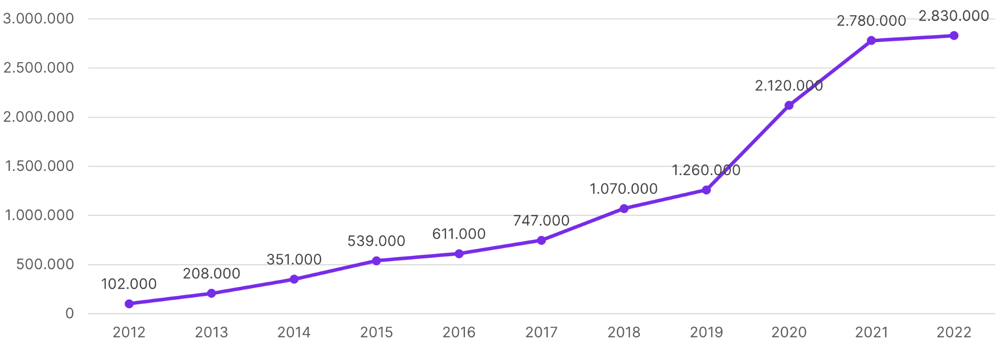
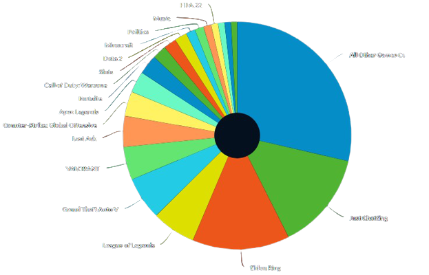

First Things First
Die Geschichte von Twitch beginnt 2007 in San Francisco mit der Gründung der Website Justin.tv, über die Nutzer ihre Videos per Livestream ins Internet stellen. 2011 wird die bis dahin erfolgreichste Sparte, der Livestream von Computerspielen, als Twitch ausgegliedert. Justin.tv selbst wird später eingestellt. Bereits 2013 verzeichnete Twitch monatlich mehr als 45 Millionen Zuschauer auf 6 Millionen Streamingkanälen. Und bereits ein Jahr später übernahm Amazon das Unternehmen für 970 Millionen US-Dollar. Ein weiterer interessanter und erstaunlicher Fakt ist, dass laut "DeepField", einem US-amerikanisches Unternehmen, Twitch während der Tagesspitzenzeit im Februar ca. 1,8% des gesamten Internet-Datenverkehrs der USA erzeugte. Der Dienst liegt somit auf Platz vier hinter den Größen wie Netflix, Google und Apple.
Kategorien
Die Hauptkategorien und einige der Unterkategorien sind:
- Spiele - Elden Ring, Lost Ark, League of Legends, ...
- IRL (In Real Life) - Just Chatting, Special Events, Politik, ...
- Musik - jeweilige Genres (Electronic, Dance, Hip-Hop, ...)
- Esports - jeweilige Spiele (League of Legends, Valorant, World of Warcraft, ...)
- Creative - Food & Drink, Art, Software & Game Development, ...
Die beliebteste Unterkategorie ist “Just Chatting” mit ca. 300.000 Zuschauern täglich. Dort spricht der Streamer beispielsweise über Themen, die ihn oder sie interessiert, oder reagiert auf Videos von anderen Content-Creatorn. Auf Twitch findet jeder etwas nach seinem Geschmack.
Verdienste der Streamer
Der Großteil der Streamer streamt hauptberuflich. Wie also finanzieren sie sich ihr Leben? Zum einen wird vor und auch während eines
Streams Werbung geschaltet. Weiterhin gibt es Firmen, die die Streamer sponsern. Sie bekommen z.B. Soft- und Hardware gestellt.
Dann kann der Zuschauer, durch ein monatlichen Abo, Bits und/oder Donations den Lieblingsstreamer unterstützen. Ein Vorteile eines
monatlichen Abos ist das werbefreie Anschauen des Streams. Ein Abonnement kostet 3,99€. Bei einer Donation kann der Zuschauer einen kurzen Text an
den Streamer verfassen und durch Bits kann man seiner Nachricht im Live Chat animierte Emotes hinzufügen.
Funfact: Durch ein Datenleck wurden letztes Jahr Einnahmen von Streamern geleakt. MontanaBlack88, einer der erfolgreichsten
deutschen Streamer, nahm von August 2019 bis Oktober 2021 ca. 2 Millionen Euro ein.
Zahlen im Überblick
Die Zuschauerzahlen auf Twitch sind über die Jahre stetig angestiegen. Die unten gezeigte Grafik macht das deutlich. Seit Beginn der Corona-Pandemie hat sich
die Zahl sogar verdoppelt.
Zuschauerzahlen über die Jahre (Stand: 04.03.2022):

Die Spiele variieren stark von Zeit zu Zeit. Grund hierfür sind Releases von Spielen. Hier dient "Elden Ring", welches am 25.02.2022
herausgekommen ist, als gutes Beispiel. Es nimmt seit Release täglich ca. 14% vom Gesamtanteil ein. Eine Woche zuvor war "Lost Ark", Release am 11.02.2022,
mit 9% dabei und ist nun auf 4,4% gesunken (Stand: 02.03.2022). Neu herausgekommene Spiele ziehen zu Beginn immer viele Zuschauer an. Das flacht jedoch nach einigen Wochen ab.
Spiele der letzten 7 Tage (Stand 02.03.2022)
